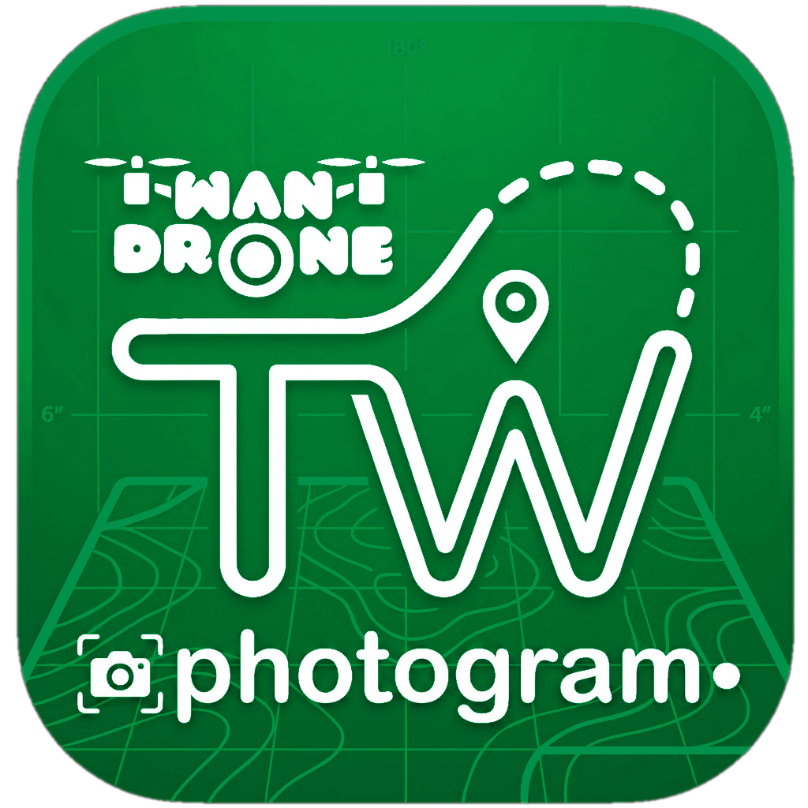

Desktop Native • macOS • Windows • Linux

TW Photogram
Fotogrametri UAV, GIS & Analisis Bahaya
Aplikasi desktop native berkecepatan tinggi yang ditulis dalam Rust 2024. Menghasilkan awan titik rapat (dense cloud), mesh 3D bertekstur, DEM/DTM, ortomosaik seamless dengan nadir feathering, kontur marching-squares, lembar peta standar BIG, simulasi genangan air (Bates Solver), dan 3D Gaussian Splatting dengan paritas setara Agisoft Metashape Professional.